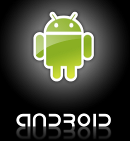
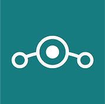

Mi Sitio Android
Android
Aquí vamos a poder ver parte de la historia de android
En los últimos años los teléfonos móviles han experimentado una gran evolución, desde los primeros terminales, grandes y pesados, pensados sólo para hablar por teléfono en cualquier parte, a los últimos modelos, con los que el término “medio de comunicación” se queda bastante pequeño.
Empezaremos con el Creador de Android AnddyRubin
Su primer trabajo importante como ingeniero es en Apple, desde donde pasó a una empresa que surgió de Apple llamada General Magic, y aquí empezó con lo importante, ya que participó en el desarrollo de Magic Cup, lo que pretendía ser un sistema operativo para teléfonos o PDAs. Sin embargo General Magic fracasó y se fue a la ruina, momento en el cual Andy se unió a Artemis Research, que acabó comprada por Microsoft. Ya hemos tenido a Andy Rubin trabajando para Apple y Microsoft, curioso.
Andy Rubin llevaba desde 1989 hasta 2003 trabajando como ingeniero en telecomunicaciones y en el mundo de los teléfonos móviles, de ahí salió Android Inc., su proyecto para crear algo nuevo y diferente.
Android de esta manera ya tenía toda una base para empezar a trabajar y formarse. Un proceso que había durado nada más y nada menos que 16 años había construido una sólida base sobre la que todo iba a empezar a funcionar.
A partir de aquí comienza el típico secretismo al que Google nos tiene acostumbrados, en el que todos rumoreaban acerca de qué estaba haciendo Google con una compañía de desarrollo de sistemas para teléfonos móviles.

La Evolución de Android
Android es la plataforma más conocida para Smarthphones y más abajo podemos ver todas la versiones hasta el 2017.
Pero Android tiene variantes que crean programadores para los teléfonos antiguos que se quedan atrás en cuanto a actualizaciones como es CyanogenMod, pero que dejara de existir en 2017 para dar paso a LineageOs que será similar.
|
CyanogenMod LineageOS  |
Ha sido muy práctico para muchos usuarios que quieren cambiar un poco el aspecto de su teléfono entrando en LineageOS puedes buscar ver si está el modelo de tu teléfono ya que estas ROMS no solo cambian el aspecto sino también la fluidez por culpa de fabricantes como Samsung que sus capas de personalización son muy pesadas y hacen que se ralentice. El sistema operativo de Google tiene apenas 5 años y en este tiempo lo hemos visto evolucionar de una manera realmente impresionante. Ahora vamos a repasar las diferentes versiones de Android y los cambios que se han ido introduciendo en ellas. Junto con cada versión existente, sus números de versión, van acompañados casi siempre un nombre, daremos una explicación del porqué de ellos. |
Versiones de Android
El sistema operativo de Google tiene apenas 5 años y en este tiempo lo hemos visto evolucionar de una manera realmente impresionante. Ahora vamos a repasar las diferentes versiones de Android y los cambios que se han ido introduciendo en ellas. Junto con cada versión existente, sus números de versión, van acompañados casi siempre un nombre, daremos una explicación del porqué de ellos.
Por que se llaman así las versiones de Android
No ha sido hasta hace relativamente poco que no se ha puesto en claro el porqué de estos nombres y su orden alfabético. Porque si nos damos cuenta van siguiendo este orden desde una de la versión 1.5 conocida como Cupcake, así, unos desarrolladores que han trabajado en las primeras fases de Android han explicado por qué esta curiosa codificación y han aclarado así de dónde provienen los nombres.
Android 1.6 – Donut, fue la primera versión que en la que empezaba con una letra del abecedario, coincidiendo con la de la versión. En la versión 1.1, Petit Four, se decidió por ese nombre gracias a una afición que tenía el product manager de la marca a ese pastel.
Nombre de Android Según Version
| Version | Nombre |
| 1.5 --------------------------------- | Cupcake |
| 1.6 --------------------------------- | Donut |
| 2.0-2.1 ----------------------------- | Eclair |
| 2.2 --------------------------------- | Froyo |
| 2.3 --------------------------------- | Ginebread |
| 3.0 --------------------------------- | Honeycomb |
| 4.0 --------------------------------- | Ice Cream Sandwich |
| Version | Nombre |
| 4.1 --------------------------------- | Jelly Bean |
| 4.4 --------------------------------- | Kit Kat |
| 5.0-5.1 ---------------------------- | Lollipop |
| 6.0 --------------------------------- | Marshmallow |
| 7.0 --------------------------------- | Nougat |
| 8.0 --------------------------------- | Oreo |
| 9.0 --------------------------------- | Pie |
¿Por que Elegir Android?
Inteligente, práctico y siempre a tu disposición
Con la inteligencia de Google integrada, Android te ofrece asistencia y datos prácticos para ayudarte a hacer lo que te gusta.
Solo tienes que hablar
Utiliza la voz para realizar tareas. Di "Ok Google" para hacer una pregunta, enviar un mensaje de texto, añadir un recordatorio, obtener indicaciones o cualquier otra cosa que necesites hacer.
¿Te acuerdas de esa foto? Encuéntrala
Google Fotos organiza tus fotos automáticamente por lugares, caras y por lo que aparece en ellas (sin necesidad de etiquetar).
Elijas el modelo que elijas, tu Android es único
Personaliza tu teléfono Android, desde la pantalla de inicio hasta el aspecto de los iconos y el tamaño del teclado.
Consigue aplicaciones
Con más aplicaciones que iOS, tienes un mundo de posibilidades al alcance de la mano.